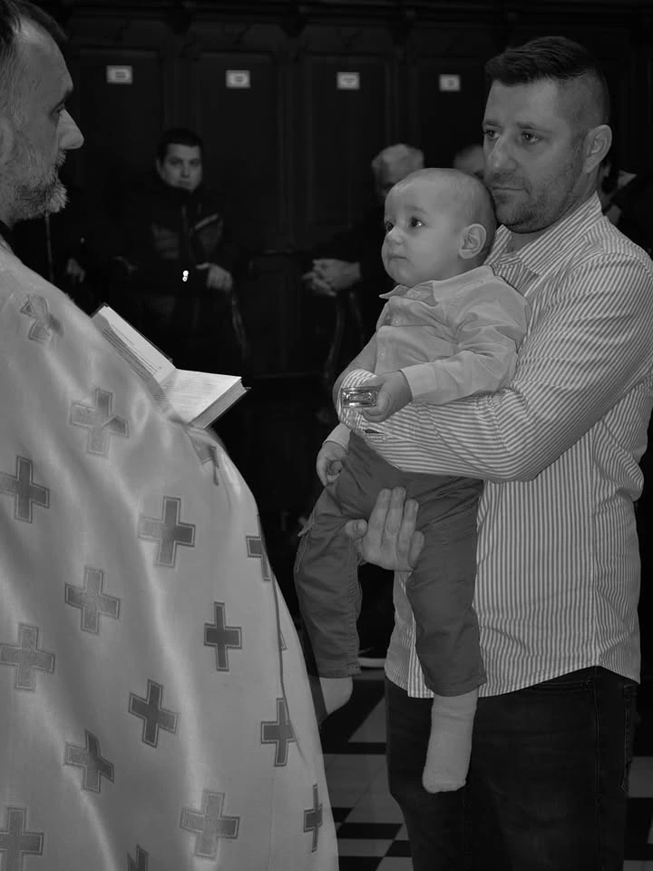
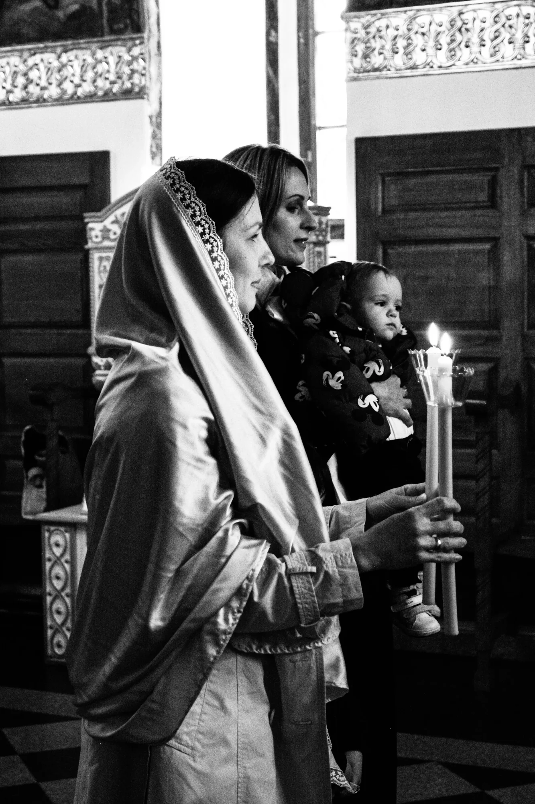
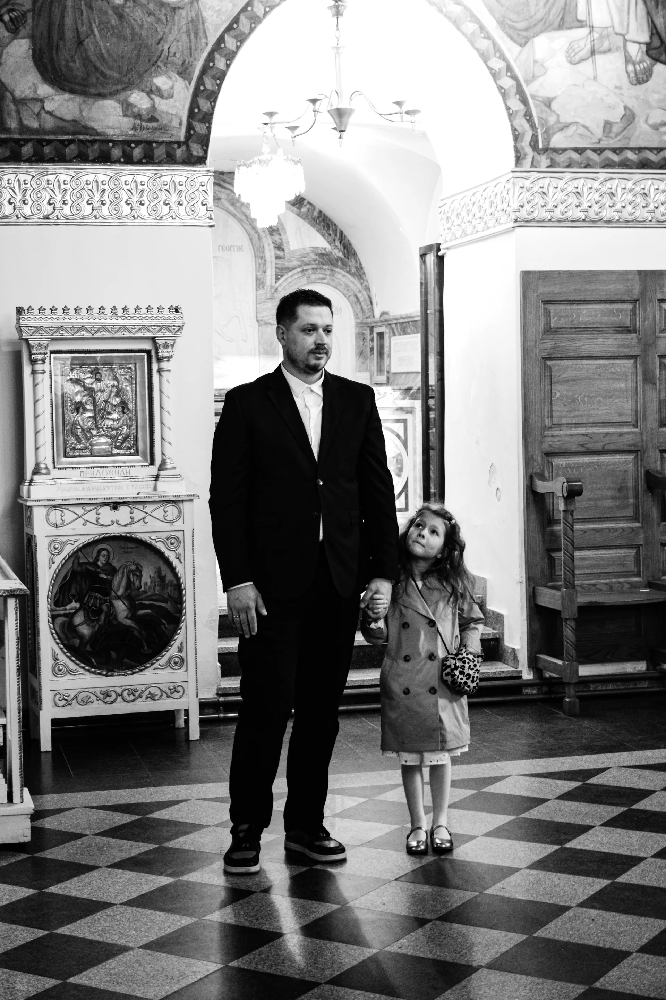
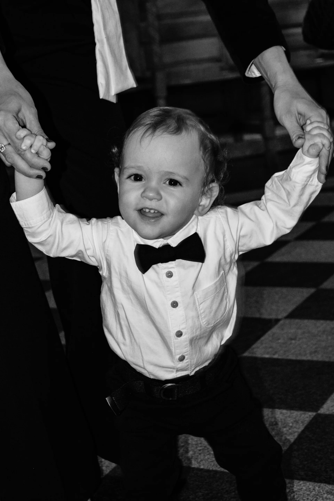
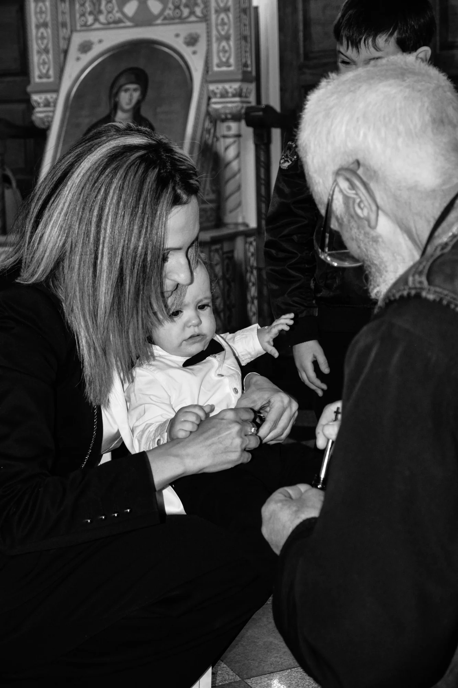
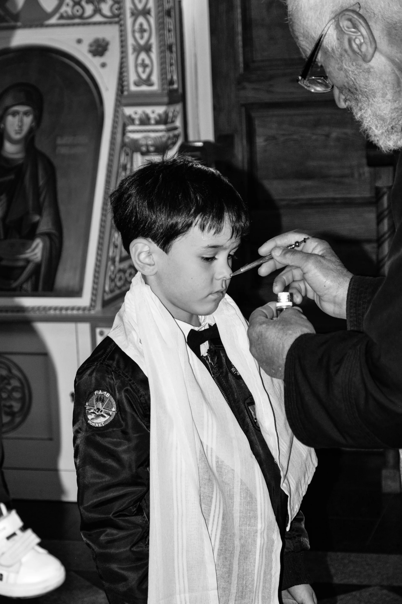
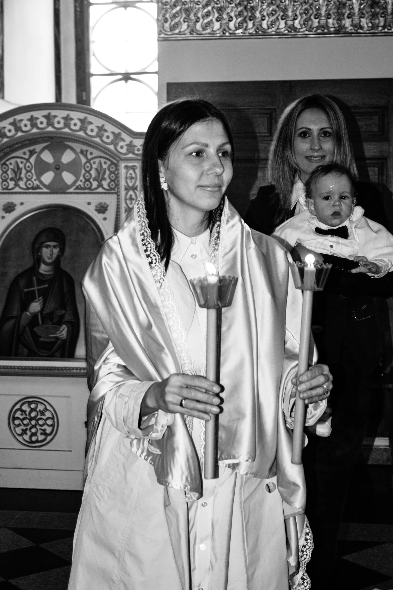
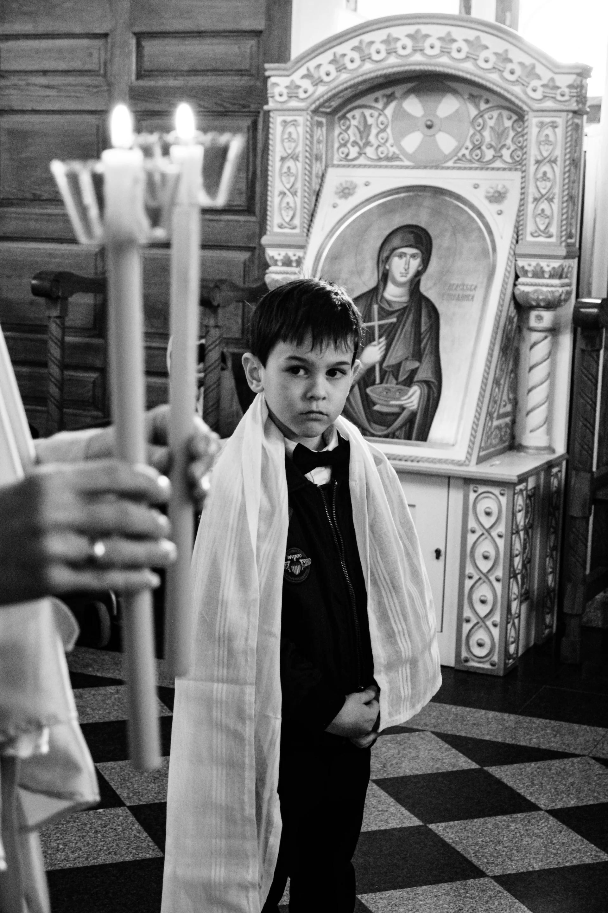
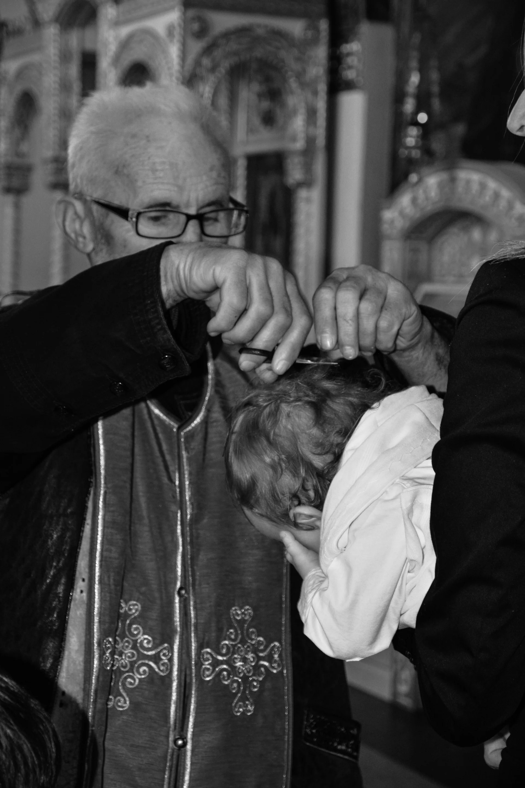
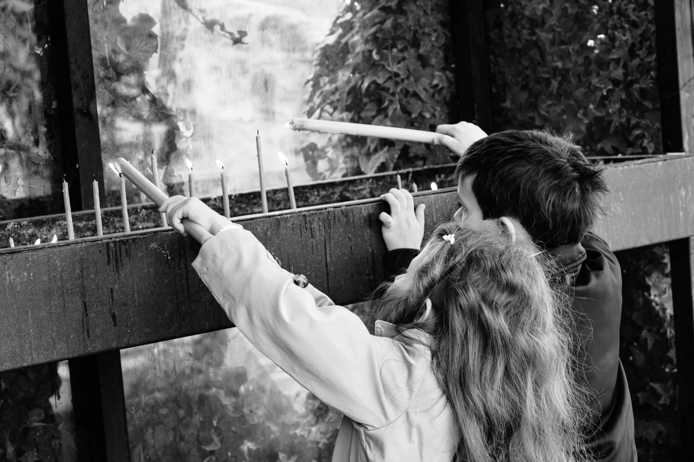

Sveti trenutak. Tiho ispraćen objektivom.
Fotografisanje krštenja u crkvi i na proslavi. Radim diskretno, poštujući obred: bez bliceva, bez upadanja sveštenicima u pokret. Samo pažljivo uhvaćeni pogledi i nežnost kuma i kume.

Sveti trenutak, sačuvan zauvek
Krštenje je jedan od najvažnijih dana u životu vašeg deteta i cele porodice. To je trenutak duhovnog početka, okružen najmilijima - i zaslužuje da bude sačuvan u svom punom sjaju. Moje fotografije čuvaju svaku emociju, svaki pogled i svaki detalj tog posebnog dana.
Fotografišem krštenja u Pančevu, Beogradu, Novom Sadu i celoj Srbiji. Radim nenametljivo i diskretno, bez ometanja obreda. Posle ceremonije, nastavljam na slavlju gde nastaju najlepši porodični trenuci.
- Crkva + slavlje u istom paketu
- Nenametljivo i diskretno fotografisanje
- 80 profesionalno obrađenih fotografija
- Iskustvo sa crkvama u Pančevu, Beogradu i Novom Sadu
- Ručna obrada svake fotografije
- Gotove fotografije za 7-10 radnih dana
Svaki momenat vašeg dana
Od priprema kod kuće, preko svetog obreda u crkvi, do slavlja sa porodicom - pratim celu priču krštenja u Pančevu, Beogradu, Novom Sadu i širom Srbije.
Pripreme
Oblačenje bebe u krsnu odeždu, poslednji detalji, uzbuđenje porodice. Ovi intimni trenuci pre crkve su često najemotivniji - i sačuvaću ih za vas.
Obred u crkvi
Sveti čin krštenja - pomazanje, uranjanje, oblačenje u belo. Fotografišem tiho i nenametljivo, poštujući svaki trenutak obreda. Bez blica, bez buke.
Porodične fotografije
Posle obreda - grupne fotografije ispred crkve ili na lepoj lokaciji u blizini. Roditelji, kumovi, bake, deke - svi zajedno za uspomenu koja traje.
Slavlje
Restoran, dvorište ili dom - gde god slavite, tu sam ja. Dekoracija, torta, zdravice, dečija igra, smeh i zagrljaji. Spontani trenuci koji čine dan nezaboravnim.
Kako izgleda naša saradnja?
Od prvog kontakta do gotovih fotografija - jednostavno, opušteno i bez stresa.
Konsultacija i dogovor
Javite mi se čim znate datum krštenja. Razgovaramo o detaljima - crkva, lokacija slavlja, broj gostiju, da li želite pripreme ili samo crkvu i slavlje. Sve dogovorimo unapred.
Priprema
Pre krštenja proverim uslove u crkvi - osvetljenje, pravila fotografisanja, raspored obreda. Pripremim se za svaki detalj da na dan krštenja ne bude iznenađenja.
Dan krštenja
Dolazim na vreme, fotografišem ceo tok - od priprema ili dolaska u crkvu, kroz obred, porodične fotografije i slavlje. Vi uživajte u danu, ja se brinem za slike.
Obrada i dostava
Svaka fotografija prolazi pažljivu ručnu obradu - boje, tonovi, detalji. Za 7-10 radnih dana dobijate gotove slike u visokoj rezoluciji, pogodne za štampanje i deljenje.
Galerija krštenja
Svako krštenje je posebna priča puna emocija, vere i ljubavi. Fotografije sa krštenja u Pančevu, Beogradu, Novom Sadu i širom Srbije.









„Krštenje našeg sina je bio emotivan dan i Anđela je uhvatila svaki poseban trenutak. U crkvi je bila potpuno neprimetna, a opet - svaka važna scena je tu na fotografijama. Na slavlju je bilo još lepše jer je uhvatila sve te spontane momente sa porodicom. Fotografije su predivne, preporučujemo svima!"
Transparentne cene, bez skrivenih troškova
Svaki paket uključuje profesionalnu obradu, konsultacije pre krštenja i kompletnu galeriju u visokoj rezoluciji.
Samo crkva
Obred + porodične fotografije
- Fotografisanje obreda u crkvi
- Grupne fotografije posle obreda
- 40 obrađenih fotografija
- Ručna obrada svake slike
- Digitalna dostava u HD rezoluciji
- Gotove fotografije za 10 radnih dana
Crkva + slavlje
Kompletno fotografisanje
- Sve iz paketa „Samo crkva"
- Fotografisanje slavlja (do 3 sata)
- 80 obrađenih fotografija
- Dekoracija, torta, spontani trenuci
- Pančevo, Beograd, Novi Sad i šire
- Gotove fotografije za 7 radnih dana
Doplata za putne troškove van Pančeva - po dogovoru
Premium paket
Celodnevno iskustvo
- Pripreme kod kuće + oblačenje bebe
- Crkva + porodične fotografije
- Kompletno slavlje bez ograničenja
- Do 150 obrađenih fotografija
- Ekspresna obrada (3 radna dana)
- Putni troškovi uključeni (Pančevo, BG, NS)
Sve što želite da znate o fotografisanju krštenja
Odgovori na najčešća pitanja roditelja i kumova. Ako imate dodatna pitanja - slobodno se javite!
Koliko unapred treba da rezervišem fotografa za krštenje?
Preporučujem rezervaciju 2–4 nedelje unapred, pogotovo za vikende. Krštenja se često organizuju brzo, pa se trudim da budem fleksibilna sa terminima - javite mi se čim znate datum! Vikendi u sezoni (april–oktobar) se brzo popune.
Koliko fotografija dobijamo sa krštenja?
Broj zavisi od paketa: Samo crkva: 40, Crkva + slavlje: 80, Premium: do 150 profesionalno obrađenih fotografija u punoj rezoluciji. Svaka fotografija je ručno obrađena sa pažnjom na detalje, boje i tonove.
Da li pokrivate krštenja van Pančeva?
Da! Fotografišem krštenja u Pančevu, Beogradu, Novom Sadu i celoj Srbiji. Za lokacije van Pančeva se dodaje doplata za putne troškove koja zavisi od udaljenosti. U premium paketu su putni troškovi za Pančevo, Beograd i Novi Sad već uključeni.
Da li fotografišete i slavlje posle krštenja?
Da! Paketi „Crkva + slavlje" i „Premium" uključuju fotografisanje slavlja. Slavlje je često puno najlepših trenutaka - dekoracija, torta, zdravice, dečija igra, porodični zagrljaji. Pratim sve te spontane momente koji čine dan nezaboravnim - u restoranu, dvorištu ili kod kuće.
Koliko traje obrada fotografija sa krštenja?
Obrada traje 10 radnih dana za paket Samo crkva i 7 radnih dana za paket Crkva + slavlje. U premium paketu je uključena ekspresna obrada od 3 radna dana. Svaka fotografija prolazi pažljivu ručnu obradu - korekcija boja, tonova, ekspozicije i detalja. Fotografije dobijate u digitalnom formatu (JPEG, puna rezolucija) pogodnom za štampanje.
Šta ako crkva i restoran nisu na istoj lokaciji?
Nema problema! Pratim vas od crkve do restorana, bez obzira na lokaciju. Ukoliko su crkva i restoran u istom gradu (Pančevo, Beograd, Novi Sad), nema dodatnih troškova. Ako su na različitim lokacijama - dogovorimo se unapred da sve prođe glatko i bez žurbe.
Sačuvajte ovaj sveti dan zauvek
Krštenje vašeg deteta je trenutak koji se ne ponavlja - sačuvajte ga u predivnim fotografijama. Bilo da se krštenje održava u Pančevu, Beogradu, Novom Sadu ili bilo gde u Srbiji - javite mi se i zakazujemo termin!